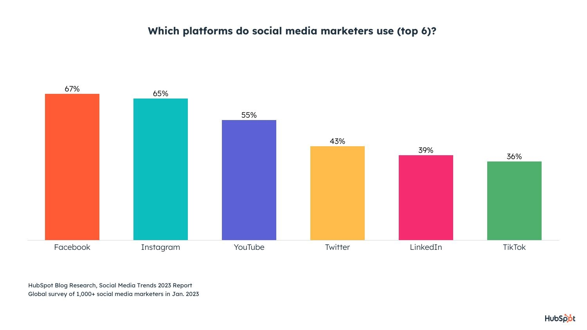

Unlocking the Power of social media in Digital Marketing
Want to Know More?Social media has emerged as a key factor in internet advertising in today's high-tech environment. Companies are starting to see the advantages of utilizing social media to sell their products and connect with their consumers, with millions of users on each network.
1. Amplifying Reach: Social media platforms offer an unparalleled opportunity to expand the reach of digital marketing campaigns. Through strategic targeting and content optimization, businesses can connect with a vast audience and increase brand visibility.
2. Enhanced Customer Engagement: social media facilitates two-way communication, allowing businesses to directly engage with their customers. By responding to queries, addressing concerns, and providing valuable content, companies can build trust and loyalty among their audience.
3. Influencer Marketing: The rise of social media influencers has revolutionized the marketing landscape. Partnering with influencers who have a significant following can boost brand awareness and credibility, driving customer engagement and sales
According to a recent study by HubSpot Link, 80% of marketers reported that social media efforts increased their website traffic. The study also highlighted that businesses that actively engage with their audience on social media platforms experience higher conversion rates.
For those working in digital marketing in today's hyper-connected world, social media platforms have evolved into an invaluable tool. Businesses have the ability to extend their reach, improve consumer interaction, and tap into the powerful network of social media celebrities by using the power of social media, which in turn may generate development and success for the company.